Developer education · Developer advocacy · Technical writing
I make technical things easier to learn.
I'm Kemi. I write courses and documentation, give talks, make videos, and build tools with AI to speed all of that up. Currently on the GraphAcademy team at Neo4j; before that, developer documentation and advocacy at Upsun and Amplience. Two Master's degrees behind it: one in Data Science, one in Contemporary Literature.
I design in Figma and Photoshop and edit video in Final Cut Pro, DaVinci Resolve and Premiere Pro. I'll build anything I find interesting, and I like it most when other people find it interesting too, especially when it's riding a trend. Mostly, I like teaching people things.
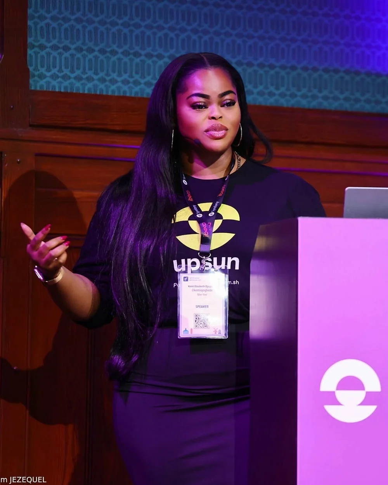
What I work with
Education and writing
Curriculum design, docs-as-code, API reference, style guides, information architecture, Markdown and MDX, Docusaurus, Hugo, Mintlify
Code and data
Python (Flask, FastAPI, pandas), JavaScript, React and TypeScript, d3.js, Playwright, SQL, Cypher and Neo4j, Git and GitHub, Tableau
AI
LLM pipelines, RAG, MCP, LangChain, prompt design, Claude and OpenAI APIs, AI-assisted coding with Claude Code, Cursor and Copilot
Design and video
Figma, Canva, Photoshop, Final Cut Pro, DaVinci Resolve, Premiere Pro, Screen Studio
Ways of working
Cross-team documentation planning, Linear and Jira, Postman, Vercel and GitHub Pages, Google Analytics and search analytics
Speaking and video
Talks, meetups, camera.
Conference talks, community meetups and short-form video. I've spoken at SymfonyCon two years running and stepped in at short notice when a slot needed filling.
The role of empathy in technical writing
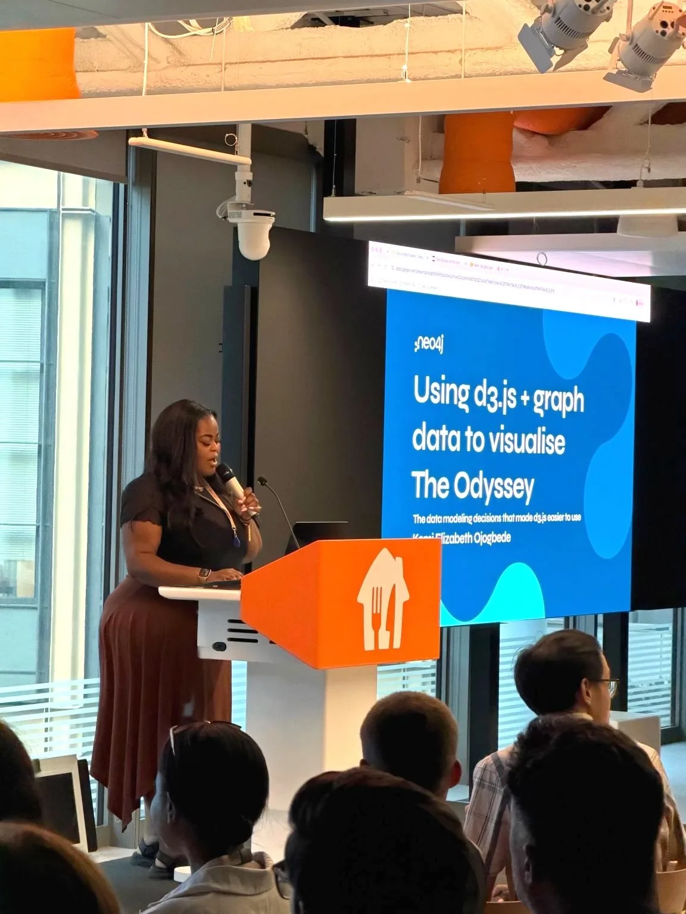
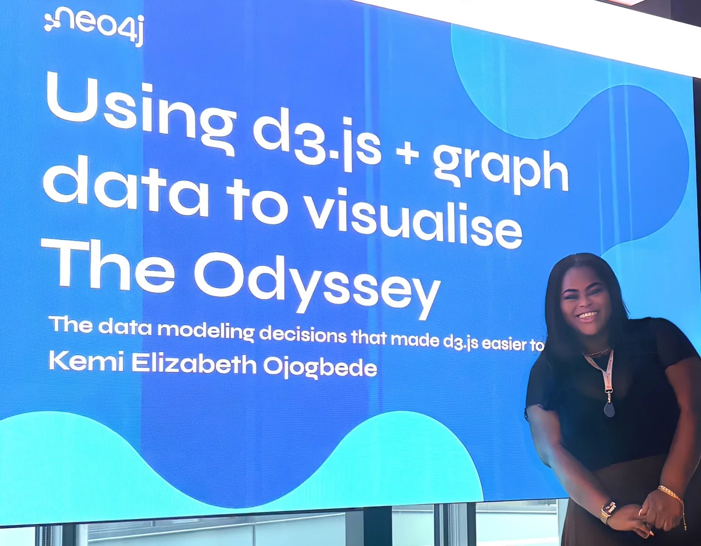
Using d3.js + graph data to visualise The Odyssey
On camera: why I chose this layout
Two-minute walkthrough
On stage and in the room
SymfonyCon Vienna 2024 and Amsterdam 2025. Scroll for more.
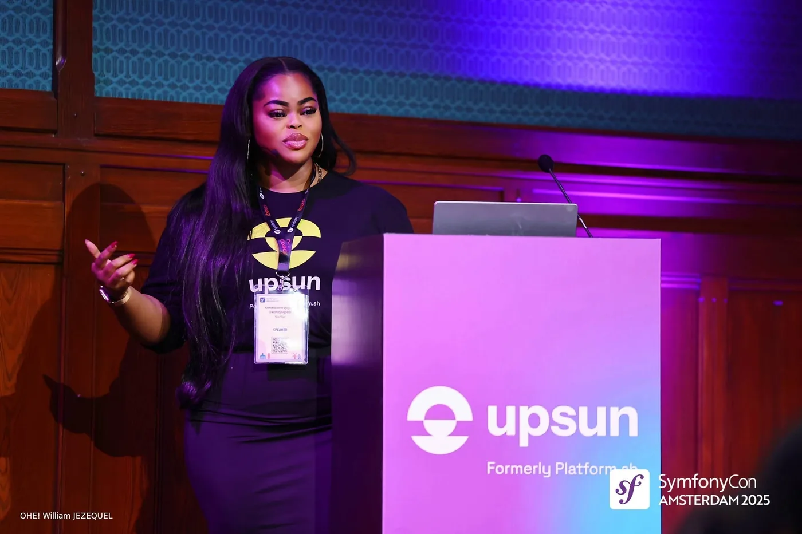
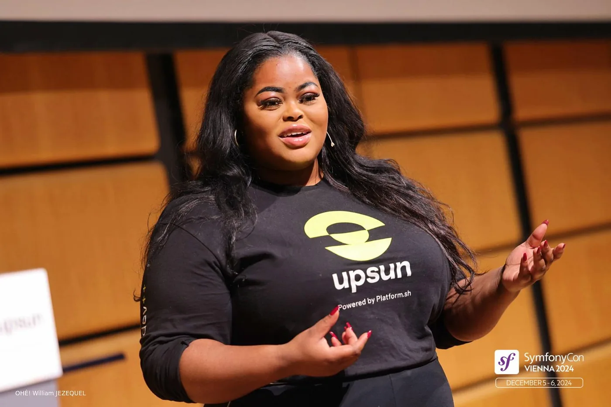
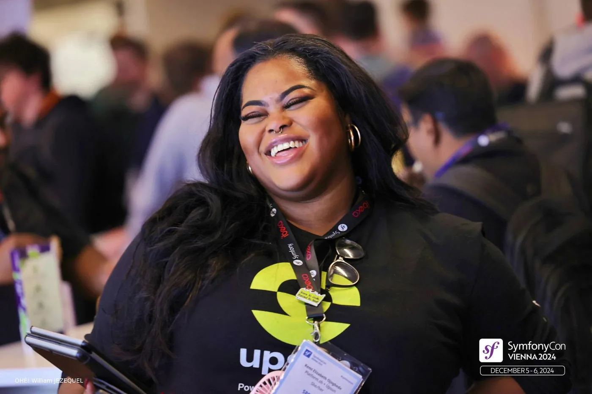
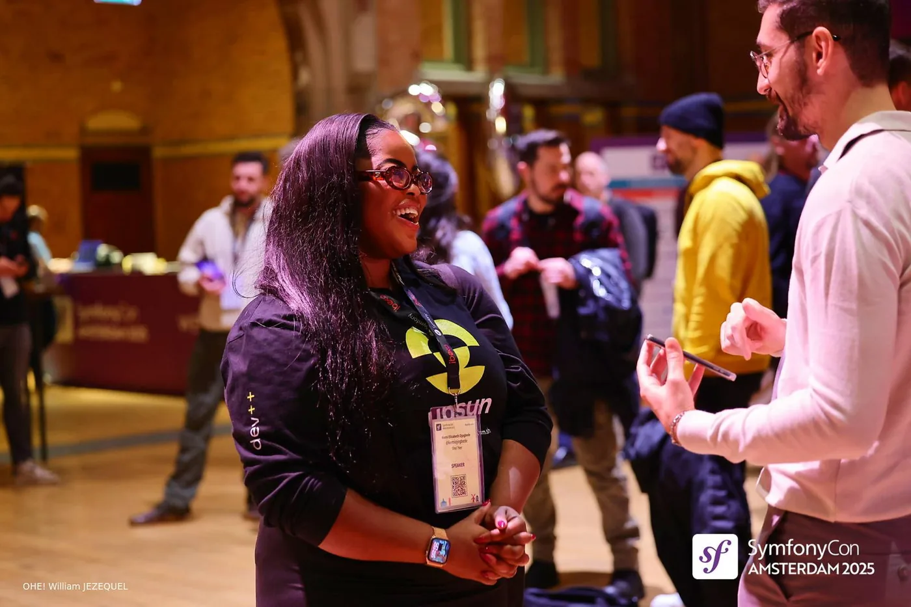
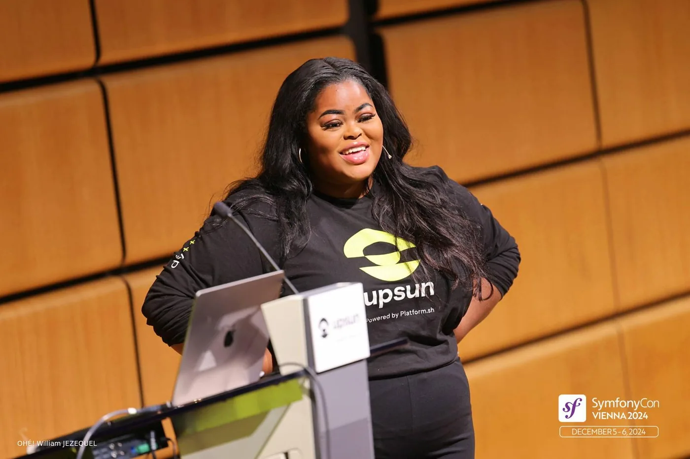
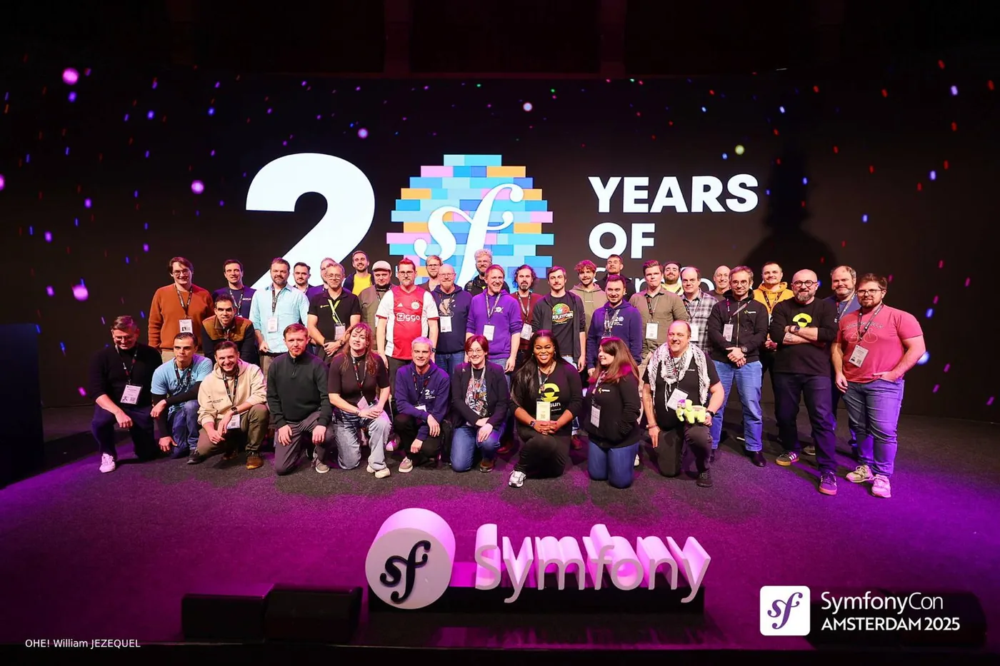
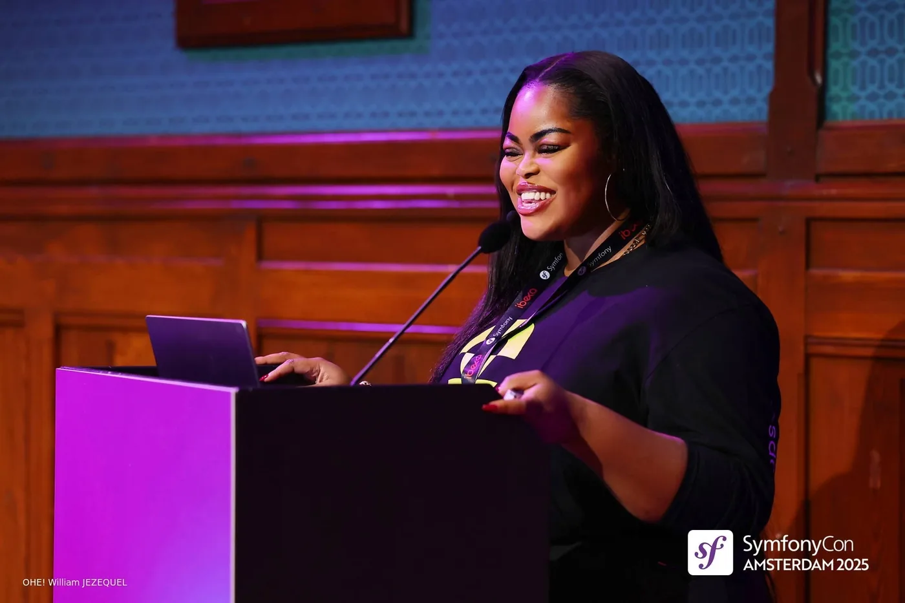
Selected work
Things I built.
Two interactive visualisations, a feature on a learning platform, and two tools for documentation teams. Each one started as a question I wanted answered.
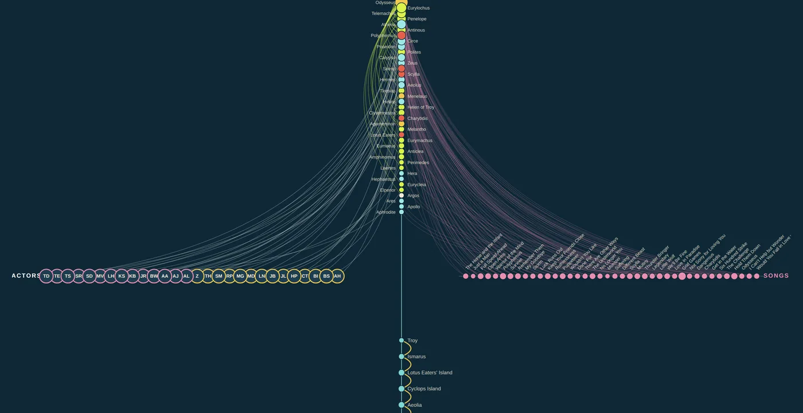
The Odyssey, three ways
What. An interactive visualisation of The Odyssey across three tellings: Homer's poem, EPIC: The Musical and Christopher Nolan's 2026 film. Hover any character, place, song or actor and it tells you the story behind it. Switch on previews and the songs play.
How. I built the dataset by hand: 130 characters, places, songs and actors, and 235 relationships between them. I loaded it into a Neo4j database, then drew it with d3.js as a hive plot, a layout that gives each type of thing its own axis so the connections between them stay readable instead of collapsing into a hairball.
Why. The film was coming out, the musical was everywhere, and I wanted to know whether the three versions actually tell the same story. They don't quite. Building it also exposed a missing connection that weeks of reading the data in a spreadsheet had hidden, which became a piece for Nightingale.
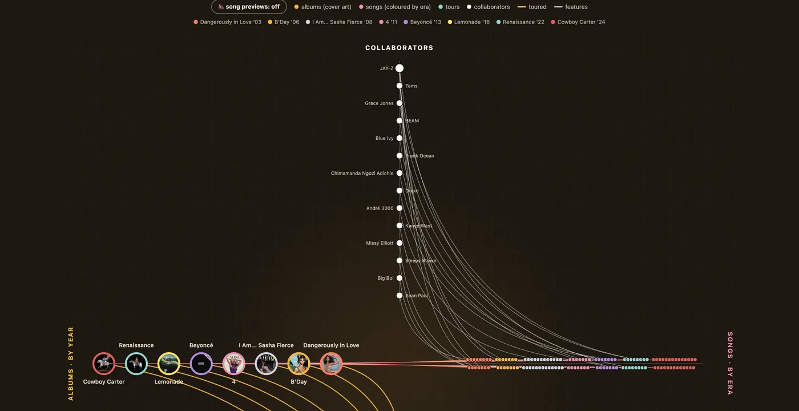
The BeyHive Plot
What. Beyoncé's solo discography as one interactive picture: eight albums wearing their own cover art, over 100 songs coloured by era, all seven tours, and every credited collaborator with a live Wikipedia bio. Toggle previews, hover a song, and it plays.
How. No database this time. The structure (albums, tours, era facts) is hand-curated in the file, and everything else arrives live when the page loads: tracklists, artwork and 30-second previews from the iTunes Search API, collaborator photos and bios from Wikipedia's API.
Why. Once I'd worked out the layout on The Odyssey, I wanted to try it on a dataset people would actually argue about.
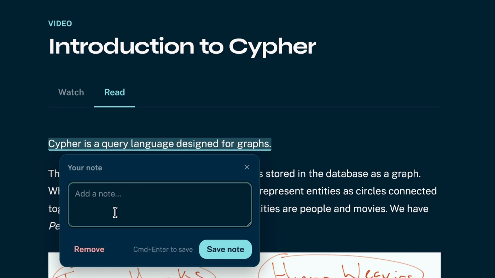
Notes and highlights for GraphAcademy
What. A note-taking feature on Neo4j's free learning platform. Select any text or image in a lesson, highlight it, add a note, and everything you save collects on a "Your notes" page at the end of the course.
How. I built it in React and TypeScript inside the platform's codebase. The hard parts were anchoring a highlight to text that can change between site rebuilds, and making a save feel instant even when the network isn't.
Why. I wanted learners to be able to keep what they'd found useful without leaving the lesson to do it.
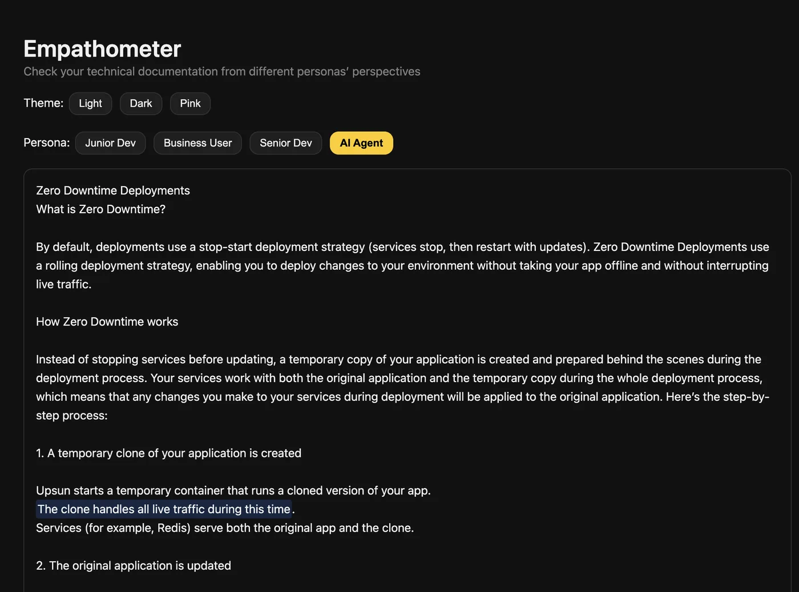
Empathometer
What. A documentation review tool that reads a page the way different readers would: a junior developer, a business user, a senior developer, an AI agent. Paste in a page, pick a persona, and it tells you where that reader would get stuck and what to change.
How. Python and FastAPI on the back end, plain HTML, CSS and JavaScript on the front, with the OpenAI API doing the reading. Each persona is a prompt with a point of view, not a checklist.
Why. "Is this clear?" is the question every docs team asks, and nobody can answer it for a reader they aren't.
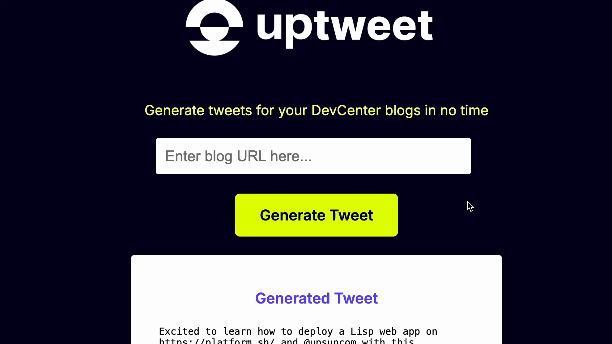
uptweet
What. A small web app that takes a long developer blog post and turns it into short social posts, showing the reasoning it used so you can correct it rather than just accept it.
How. Python and Flask, with an LLM doing the first draft and a person keeping the voice.
Why. Built at Upsun, where one blog post a week needed to become several posts, and rewriting them by hand was the part nobody had time for.
Writing
Published work.
Two pieces I'm proud of, then recent posts and a selection of the developer documentation I've written and led.
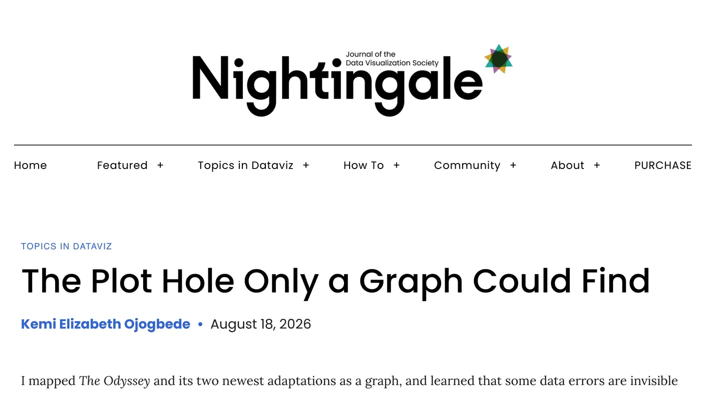
Nightingale · Data Visualization Society · August 2026
The Plot Hole Only a Graph Could Find
I mapped The Odyssey and its two newest adaptations as a network and found a missing connection that weeks of reading the same data in a spreadsheet had hidden.
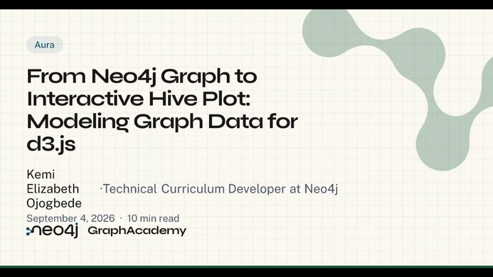
GraphAcademy blog · September 2026
From Database to Interactive Visualisation: Modelling Data for d3.js
The full write-up of how the Odyssey visualisation was built: the four data modelling decisions that made it possible, with the wrong turns left in.
Data and AI
Documentation
- GraphQL Content Delivery overview
- Asset Management API
- Webhook guides
- CLI tool
- The Upsun MCP server
- Build and deploy, including zero-downtime deployments
- FrankenPHP
- Troubleshooting 502 errors
- Up(sun) and running with Lisp
A selection. At Upsun I led the documentation through the Platform.sh brand merge and a replatform to Mintlify; at Amplience I owned the REST and GraphQL API docs.
Earlier journalism, 2016 to 2018
- Moonlight: can Barry Jenkins's coming-of-age tale secure an Oscar?
- The inescapable rise of 3D-printed clothing
- Genius behind the gems: meet Julien Riad Sahyoun
- Thanos, Pennywise and six unlikely film villains
- How to see the world's most impressive natural phenomena in style
- Horror films with killer animal attacks
Education
Education.
Two Master's degrees and a BA, 2011 to 2021.
MSc Data Science
Birkbeck, University of London · 2019 to 2021 · part-time, alongside full-time work
Programming in Python, R and Java. Statistics and the analytical foundations of data science. Machine learning and natural language processing. Data and knowledge management, including relational databases and SQL. Finished with a supervised research project on a real dataset.
MA Contemporary Literature & Cultural Theory
Birkbeck, University of London · 2014 to 2016 · part-time
Twenty-first-century literature and critical theory: how narrative form changes with new technology, and how culture is read, argued about and written up. Assessed through research essays and a 15,000-word dissertation of independent research.
BA English with Creative Writing
University of Nottingham · 2011 to 2014
Two-thirds English literature and language, from Old English to contemporary writing, with linguistics and discourse analysis. One-third creative writing, taught in workshops: fiction, poetry, narrative voice, structure and editing.
On LinkedIn
Recent posts.
A few recent posts. The rest, and the conversation around them, are on LinkedIn.
About
The long way round.
I came to developer education through journalism, content, data and documentation, in that order. National newspapers first, then content and data work at Mumsnet and Finder, a stint as a data visualisation engineer at a media agency, and four years writing API documentation and doing developer advocacy at Amplience and Upsun.
At Neo4j I write and film courses for GraphAcademy, build features on the learning platform, and co-host a women in tech meetup at the London office. Outside work I build things like the projects above, mostly because I want to see them exist. Based just outside London.
- 2026 to now
Technical Curriculum Developer
Neo4j, GraphAcademy - 2024 to 2026
Senior Technical Writer & Developer Advocate
Upsun (formerly Platform.sh) - 2022 to 2024
Technical Writer, REST and GraphQL APIs
Amplience - 2022
Data Visualisation Engineer
PHD Media - 2020 to 2022
Content Marketing & Data Manager
Finder UK - 2018 to 2020
Commercial Content Creator, then Email Specialist
Mumsnet - 2016 to 2018
Journalist
The Mirror, The Week UK, Grazia UK